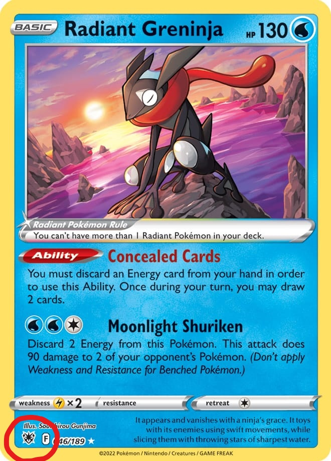
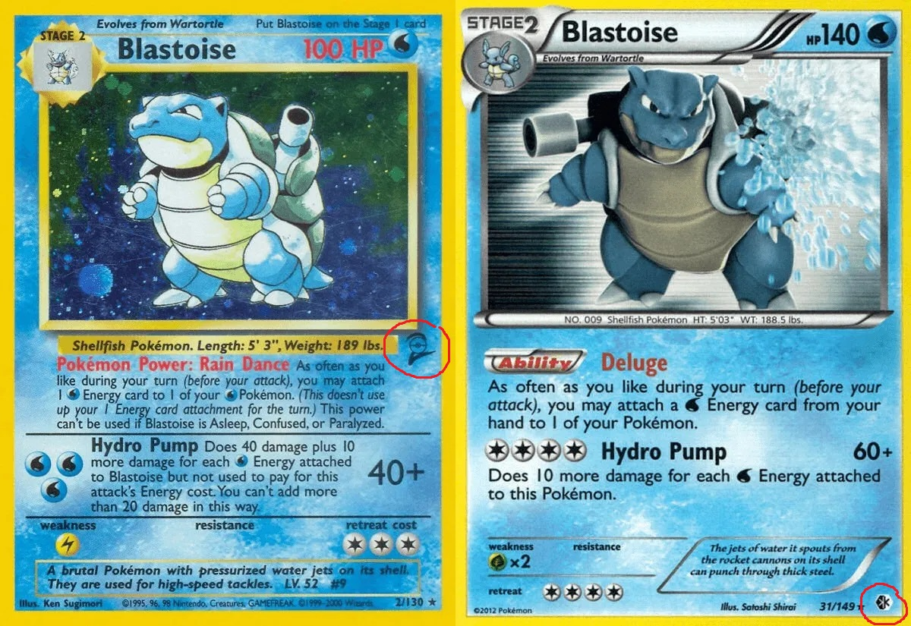

Table of Contents - PLACEHOLDER
Understand Pokemon Card Expansions
Pokemon cards are released in expansions (sometimes called sets) every few months. Expansions usually introduce between 100-200 cards with different Pokemon, new artwork, and new abilites (for the card game).
Expansions typically have a 2 word phrase as it's name (i.e. Lost Origin, Astral Radiance, or Brilliant Stars). In addition, there is a particular symbol associated with each expansion. This symbol is found on every card within that set. This symbol is often the first means of identifying a particular Pokemon card.
In this example, the symbol for Astral Radiance is found in the lower left corner of the card.
In older sets, the symbol may appear in different locations. The two Blastoise cards above shows a symbol in the middle right and lower right, respectively.
It is NOT necessary to memorize the symbols for each set. I will include the symbol near the top of each of our missing cards list (NOT currently implemented). In addition, we are limiting our search to primarily one or two sets at a time. Focusing only on those expansions narrows the search scope.
(In the future, I may also include a link you can click to see an image of each card. Unsure of how to implement at the moment.)